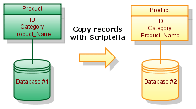
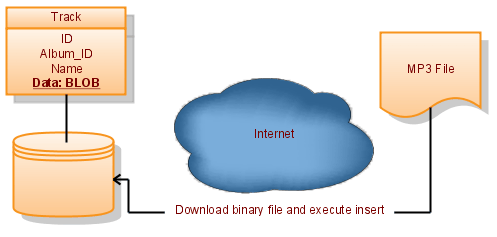

Two Minute Tutorial
Installation
- Download the Scriptella binary distribution or build from source.
- Unpack it and add
<SCRIPTELLA_DIR>/binto a systemPATHvariable.Use
set PATH=%PATH%;SCRIPTELLA_DIR\binfor Windows andexport PATH=${PATH}:SCRIPTELLA_DIR/binfor Unix. - Confirm a Java 8 JRE is available by running
java -version. Scriptella 1.3 targets Java 8 bytecode. - Optional step: Put JDBC drivers required by your scripts in the
<SCRIPTELLA_DIR>/libdirectory, or set theclasspathattribute on connection elements.
Use Scriptella as Ant Task
In order to use Scriptella as Ant task you will need the following taskdef declaration:
<taskdef resource="antscriptella.properties" classpath="/path/to/scriptella.jar[;additional_drivers.jar]"/>Running Scriptella files from Ant is simple:
<etl/> <!-- Execute etl.xml file in the current directory -->or
<etl file="path/to/your/file"/> <!-- Execute ETL file from specified location -->Command-Line Execution
Just type scriptella to run the file named etl.xml in the current directory. Alternatively you can use java launcher:
java -jar scriptella.jar [arguments]Executing ETL Files from Java
It is extremely easy to run Scriptella ETL files from java code. Just make sure scriptella.jar is on classpath and use any of the following methods to execute an ETL file:
EtlExecutor.newExecutor(new File("etl.xml")).execute();
EtlExecutor.newExecutor(getClass().getResource("etl.xml")).execute();
EtlExecutor.newExecutor(
servletContext.getResource("/WEB-INF/db/init.etl.xml")).execute();See EtlExecutor Javadoc for more details on how to execute ETL files from Java code.
Examples
For a quick start type scriptella -t to create a template etl.xml file.
Copy table to another database

Assume Database #1 contains Table Product with id, category and name columns. The following script copies software products from this table to Database #2. Additionally Name column is changed to Product_Name.
etl.xml:
<etl>
<connection id="db1" url="jdbc:database1:sample" user="sa" password="" classpath="external.jar"/>
<connection id="db2" url="jdbc:database2:sample" user="sa" password=""/>
<query connection-id="db1">
SELECT * FROM Product WHERE category='software';
<script connection-id="db2">
INSERT INTO Product(id, category, product_name) values (?id, ?{category}, ?name);
</script>
</query>
</etl>Working with BLOBs

The following sample initializes table of music tracks. Each track has a DATA field containing a file loaded from an external location. File song1.mp3 is stored in the same directory as etl.xml and song2.mp3 is loaded through the web.
etl.xml:
<etl>
<connection url="jdbc:hsqldb:file:tracks" user="sa" password=""/>
<script>
CREATE TABLE Track (
ID INT,
ALBUM_ID INT,
NAME VARCHAR(100),
DATA LONGVARBINARY
);
INSERT INTO Track(id, album_id, name, data) values
(1, 1, 'Song1.mp3', ?{file 'song1.mp3'});
INSERT INTO Track(id, album_id, name, data) values
(2, 2, 'Song2.mp3', ?{file 'http://musicstoresample.com/song2.mp3'});
</script>
</etl>Supporting several SQL dialects
<dialect> element allows including vendor specific content. The following example creates database schema for Oracle/HSQLDB or MySql depending on a selected driver:
<etl>
<properties>
<include href="etl.properties"/>
</properties>
<connection url="$url" user="$user"
password="$password" classpath="$classpath"/>
<script>
<dialect name="hsql">
<include href="hsqldb-schema.sql"/>
</dialect>
<dialect name="oracle">
<include href="oracle-schema.sql"/>
</dialect>
<dialect name="mysql">
<include href="mysql-schema.sql"/>
</dialect>
INSERT INTO Product(id, category, product_name)
VALUES (1, 'ETL', 'Scriptella ETL');
INSERT INTO Product(id, category, product_name)
VALUES (2, 'Development', 'Java SE 6');
</script>
</etl>